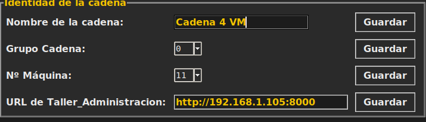

Documentación técnica · Lab.Panda 2.4 · Producción
Guía pensada para poder seguirla sin ser programador, paso a paso, para montar una línea de producción más (la 2ª, la 3ª...). Si algún término técnico no se entiende, se explica la primera vez que aparece.
Una línea de producción (o cadena) es un taller completo: los dos robots, la cinta y la simulación de Webots donde se mueven. Una sola línea ya fabrica y clasifica piezas. Tener más líneas es como tener más talleres trabajando a la vez: cada uno fabrica por su cuenta, sin estorbar a los demás.
Cada línea tiene su propio panel de control, desde el que se manejan solo sus robots. Arriba de cada panel se ve en grande el nombre de la línea y su Nº de máquina, para no confundirlos cuando hay varios abiertos.
Las líneas pueden estar en el mismo ordenador o en otros distintos, incluso mezclando Windows y Linux: el 24 de septiembre de 2026 funcionaron a la vez una línea en un PC con Windows y dos en otro equipo con Linux.
Todas las líneas comparten el mismo panel de pedidos web (Taller_Administracion). No hace falta duplicar nada de eso ni configurar nada especial ahí — cada línea simplemente avisa cuando termina una pieza, y el sistema de pedidos ya sabe repartir el trabajo entre las líneas que haya encendidas en cada momento (ver paso 5).
ROS_DOMAIN_ID), pero todas hablan con el mismo panel de pedidos — el reparto de trabajo pasa por ahí, no entre líneas.No hace falta escribir comandos largos ni tocar nada por dentro. En la carpeta principal del proyecto hay unos ficheros ya preparados que lo lanzan todo. Los que acaban en .sh son para Linux (se lanzan en una terminal, escribiendo ./ delante del nombre) y los que acaban en .bat son para Windows (se lanzan con doble clic).
| Quiero… | En Linux | En Windows |
|---|---|---|
| Arrancar todo: la web de pedidos y la primera línea, con su panel | ./arrancar_todo.sh | arrancar_windows.bat |
| Añadir otra línea (la 3, la 4…), o volver a encender una que ya creé | ./crear_linea.sh 3 | crear_linea_windows.bat (pregunta el número de línea y el Nº de máquina) |
| Apagarlo todo | ./cerrar_todo.sh | cerrar_windows.bat (cierra también las ventanas de Webots) |
| Apagar solo una línea | — | cerrar_windows.bat 3 (apaga la línea 3 y su ventana de Webots; las demás siguen) |
| Añadir una línea sin que me pregunte nada | — | arrancar_windows.bat 3 30: la línea 3, con el Nº de máquina 30. El Nº se puede dejar y ponerlo luego en el panel |
Cada uno va diciendo en pantalla lo que hace, espera él solo a que los robots estén listos y al final abre el panel de control de esa línea. En Windows, cada línea abre su propio Webots y su panel en otra pestaña del navegador (la 1 en localhost:6080, la 2 en 6081…). Probado el 25 de septiembre de 2026 con 4 líneas a la vez en un portátil con Windows 11.
Una línea en otro ordenador trabajando para la web de pedidos de este: en el otro equipo (Linux) se añade la línea diciéndole dónde está la web, por ejemplo ./crear_linea.sh 3 33 http://IP_DEL_OTRO:8000 (el 33 es el Nº de máquina de esa línea, que no debe repetirse).
Todo lo que viene a partir de aquí es para quien quiera saber qué hacen esos ficheros por dentro, o hacerlo a mano.
Todo lo que explican los pasos 1 a 4 de aquí abajo —copiar la plantilla, cambiarle los tres nombres, encenderla, lanzar la celda y esperar a que conecten los robots— lo hace de un tirón el script crear_linea.sh, en la raíz del proyecto:
./crear_linea.sh 3Si se ejecuta sin ningún número, enseña esta misma ayuda en vez de arrancar nada:
Uso: crear_linea.sh <N> [numero_maquina] [url_taller_administracion] [grupo_cadena]
Ejemplos:
crear_linea.sh 3
crear_linea.sh 3 3
crear_linea.sh 3 3 http://192.168.1.XXX:8000
crear_linea.sh 3 3 http://192.168.1.XXX:8000 0Cada parámetro, en el orden en que hay que escribirlos:
| Parámetro | Obligatorio | Qué es |
|---|---|---|
| N | Sí | El número de la línea nueva (3, 4... nunca 1 ni 2, esas ya existen). Fija también su ROS_DOMAIN_ID (30+N). |
| numero_maquina | No | 0 a 99. El Nº Máquina de esa línea en el panel — si no se pasa, no se toca (se rellena luego a mano en la pestaña Configuración). |
| url_taller_administracion | No | Solo hace falta si esa línea vive en otro ordenador distinto del que tiene Taller_Administracion. P.ej. http://192.168.1.XXX:8000. |
| grupo_cadena | No | 0 a 99. El Grupo Cadena de esa línea — igual que el Nº Máquina, si no se pasa se deja para rellenar luego a mano. |
Al terminar, abre él solo el panel de control. Y si la línea ya existía —la creaste otro día y solo quieres volver a encenderla— el script se da cuenta solo: no toca la plantilla ni los nombres, simplemente la enciende y la lanza tal cual estaba.
Los pasos 1 a 4 de aquí abajo explican, uno por uno, qué hace el script por dentro — léelos si prefieres hacerlo a mano, o si quieres entender cada pieza antes de usarlo.
Dentro de la carpeta Lab.Panda 2.4 hay una carpeta llamada .devcontainer2 que es justo esto: la "receta" de cómo montar una segunda línea, ya escrita y ya probada. Para crear la línea número N, se copia entera con otro nombre:
cp -r "Lab.Panda 2.4/.devcontainer2" "Lab.Panda 2.4/.devcontainerN"(sustituir la N por el número real, por ejemplo .devcontainer3)
Dentro de la carpeta nueva hay un fichero llamado docker-compose.yml — es la "receta" en sí, dice qué cajas hay que encender y cómo. Hay que abrirlo con un editor de texto normal y cambiar únicamente estas tres cosas (aparecen dos veces cada una, una por cada caja):
| Qué cambiar | Ejemplo (línea 3) | Por qué |
|---|---|---|
| Nombre de las cajas ( container_name / hostname) | webots_panda_sim24_linea3 ros2_panda_dev24_linea3 | Dos cajas nunca pueden tener el mismo nombre en el mismo ordenador. |
| Nombre de la red | panda_ros_net_linea3 | Para que los robots de una línea no "escuchen por error" a los de otra. |
| Número de "dominio" ( ROS_DOMAIN_ID) | 33 | El que de verdad aísla cada línea — como un canal de radio distinto. La línea 1 usa uno, la línea 2 el 32; cada línea nueva necesita uno que ninguna otra esté usando ya. |
Todo lo demás del fichero se deja tal cual está copiado — apunta a propósito a las mismas carpetas de código que la línea 1 (para no tener que mantener copias sueltas del mismo taller: si se mejora algo en el código, todas las líneas lo tienen a la vez).
Un aviso sobre los "puertos" (la forma en que una caja habla con el mundo exterior, como el botón físico de parada de una Raspberry Pi Pico): si esta línea nueva tiene su propio botón físico conectado, hay que darle un puerto que ninguna otra línea esté usando. Si es solo simulación (sin hardware físico propio, como la línea 2 de pruebas), se deja sin esa parte — usar el mismo puerto que otra línea hace que el arranque falle directamente, con un aviso claro de qué puerto choca.
Desde un terminal, dentro de la carpeta que se acaba de crear:
cd "Lab.Panda 2.4/.devcontainerN"
docker compose up -d --buildEsto tarda un rato la primera vez (está preparando las cajas). Cuando termina, la línea ya está funcionando por dentro, aunque todavía no se ve ninguna ventana en pantalla — eso es el siguiente paso.
El código de ROS2 (ros2_ws) es el mismo para todas las líneas de esta máquina, así que solo hay que compilarlo una vez, no una por línea. Si esta es la primera línea que se enciende en este ordenador (nunca se pasó antes por arrancar_todo.sh), hay que compilarlo a mano antes del siguiente paso — si no, falla con setup.bash: No such file or directory:
docker exec ros2_panda_dev24_lineaN bash -c "source /opt/ros/humble/setup.bash && cd /workspace && colcon build --packages-select panda_controller --symlink-install"Encender las cajas no mueve todavía nada: hay que arrancar dentro el programa que conecta los robots con Webots (se queda funcionando en segundo plano):
docker exec -d ros2_panda_dev24_lineaN bash -c "source /opt/ros/humble/setup.bash && source /workspace/install/setup.bash && cd /workspace && ros2 launch panda_controller robot_launch_industrial_cell.py > /tmp/robot_launch.log 2>&1"Para saber si ya ha conectado, esto tiene que acabar diciendo 6 (los seis "controladores": dos brazos, dos cámaras y dos supervisores):
docker exec ros2_panda_dev24_lineaN grep -c "Controller successfully connected" /tmp/robot_launch.logdocker exec -it ros2_panda_dev24_lineaN bash
source /opt/ros/humble/setup.bash && source /workspace/install/setup.bash
ros2 run panda_controller teleop_guiEsto abre la ventana del panel de control, igual que la de la línea 1 pero para esta línea nueva. Todo lo que hay que rellenar está en la pestaña Configuración: pulsa Desbloquear (clave) y escribe la clave maestra 1111 (así nadie lo cambia sin querer; la pestaña se vuelve a bloquear sola al cambiar de pestaña; esa clave se puede cambiar en la propia pestaña, en el recuadro Cambiar clave de configuración que hay debajo de Idioma, escribiéndola dos veces):
Buena práctica: reserva los números. El grupo y el número de máquina comparten el mismo campo del pedido (0 a 99), así que no deben coincidir: si una línea tiene el Nº Máquina 80 y los clavos son del grupo 80, esa línea se creería dueña de los pedidos de clavos aunque no sea de su grupo. Lo más fácil es repartir la numeración desde el principio y no mezclarla, por ejemplo máquinas del 1 al 49 y grupos del 50 al 99 (clavos = grupo 80). Nada lo obliga por sistema: es una costumbre que conviene tener antes de tener muchas líneas.
Cada apartado tiene su botón Guardar (o Aplicar, en las Pico).
Sí. Cada línea (su Webots y sus robots) es totalmente independiente y no necesita nada de otro ordenador. Lo único que sí es compartido es la web de pedidos (Taller_Administracion) — normalmente vive en el mismo PC que la línea 1, y las demás líneas la encuentran solas por un nombre interno que solo funciona dentro de esa misma máquina. Para que una línea en otro ordenador la encuentre, hay que decirle la dirección de red real:
hostname -I o ip addr) — algo como 192.168.1.50.http://192.168.1.50:8000 (esa IP, puerto 8000) y pulsa Guardar. El panel se reconecta solo, sin reiniciar nada.
http://192.168.1.XXX:8000). Cada campo tiene su botón Guardar.La Raspberry Pi Pico de esa línea (si tiene) tiene que estar conectada físicamente al ordenador donde corre esa línea, no al de la web de pedidos. El resto — Grupo Cadena, Nº Máquina, arrancar/apagar — funciona exactamente igual que si estuviera en el mismo ordenador.
cd "Lab.Panda 2.4/.devcontainerN"
docker compose downEsto apaga y borra las cajas de esa línea, pero no borra nada de código ni de la base de datos de pedidos — se puede volver a encender en cualquier momento repitiendo el paso 3. Si esa línea se quedó con algún pedido "suyo" a medias, ese pedido se queda reservado para ella hasta que alguien lo libere a mano (hay un botón "Liberar" en la web de pedidos, para quien tenga permiso de administrador del sistema).
El panel de control deja elegir Nº Máquina y Grupo Cadena del 0 al 99, así que por numeración sobra sitio. El límite real es el ordenador: cada línea es un Webots completo más sus robots, y con dos ya se nota el trabajo de la máquina. Si algún día hiciera falta ampliar los números, están en MAX_MAQUINA / MAX_GRUPO_CADENA (teleop_gui.py) y GRUPO_CADENA_MAX (Taller_Administracion/app/main.py); el resto de este proceso (los pasos 1 a 6) sería exactamente igual.